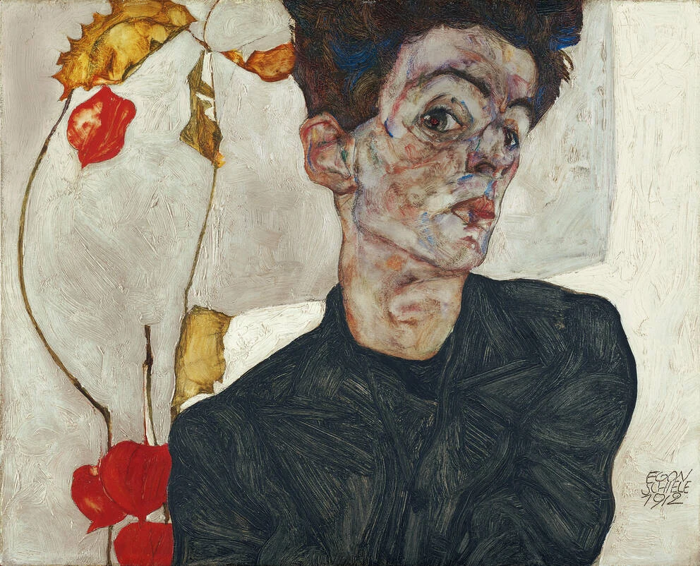
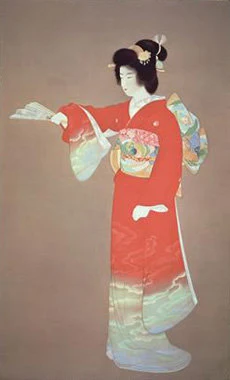
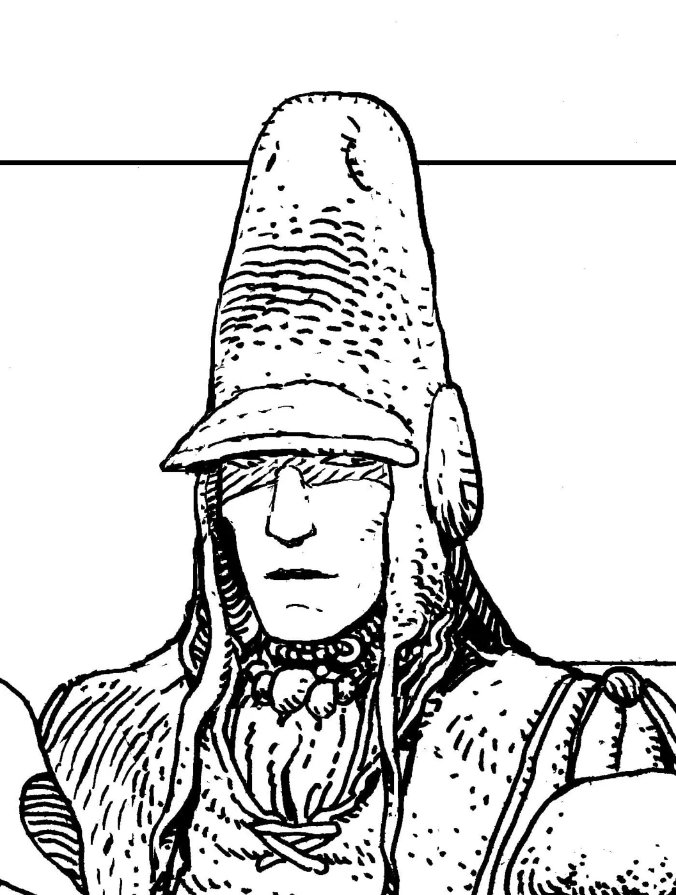

人物画风入门
同样画人物，观察八种选择
这些方向并非同一层级的艺术分类。沿着作品观察各自的形、线、色，再决定你想迁移什么。






Mary Blair
世纪中叶现代主义插画
大胆色彩与简洁形状共同讲故事。人物可以很小，画面依然通过形状、比例和冷暖让情绪一目了然。
观察题：缩小图片后，大色块是否仍能传达画面感受？
读懂特点，再选取特征 →
做一次自己的比较
- 先任选一页，不看风格名称，写下三个看得见的特点。
- 再对照页内说明，把“好看、精致、有感觉”换成具体的形状、线条和颜色。
- 选择自己原图中适合迁移的特点，进入提示词页面，删去不需要的特征并填写本次目标。
- 用同一主体比较两种不同描述，记录哪些变化来自线条、色彩或空间，而不是题材。